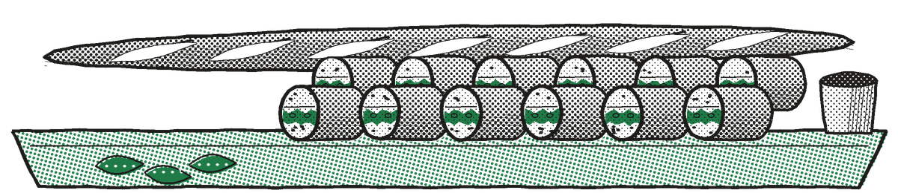
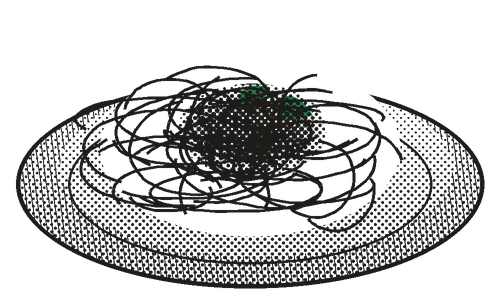

Deli Counter
Sliced to order while you wait. Party trays on one day's notice.

BAGUETTE PARTY TRAY
Twelve pieces. Order a day ahead.
Crusty French loaf spread thick with cultured butter, layered with shaved leg ham and sliced cornichons, pressed and cut in twelve. Dijon mustard on the side.
FROM THE DELI CASE
Mixed olives warmed in olive oil with orange peel, thyme and crushed garlic, packed with cornichons and pickled onions.
We'll warm it while you wait.
BY THE POUND
SLICED THIN OR THICK
Boiled ham . . . . . . . . . . . . . . . . . . . . . . . . . . . . . . . . . . . . . . . . . . . . . . . . . . . . . . . . . . . .3.99LB
Genoa salami . . . . . . . . . . . . . . . . . . . . . . . . . . . . . . . . . . . . . . . . . . . . . . . . . . . . . . . . . . . .4.49LB
Sharp provolone . . . . . . . . . . . . . . . . . . . . . . . . . . . . . . . . . . . . . . . . . . . . . . . . . . . . . . . . . . . .3.99LB
Imported prosciutto . . . . . . . . . . . . . . . . . . . . . . . . . . . . . . . . . . . . . . . . . . . . . . . . . . . . . . . . . . . .8.99LB

Tony's
Restaurant, Little Italy
Tony's spaghetti, by the quart
San Marzano tomatoes crushed by hand, garlic cooked gently in olive oil, simmered twenty-five minutes, finished with basil and a knob of butter. Grated parmesan on the side.
Ask for Tony.
20¢
Off a quart of milk
With this coupon.
One per family. Good thru Saturday.
FREE
Cup of hot coffee
With any party tray order.
One per order. Good thru Saturday.
Clip and bring to the register. No cash value.Villafañe Food Market, Little Italy. Printed in U.S.A. 1994